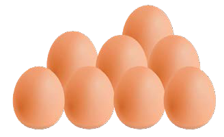

8. Tunga sentensi kwa kutumia maneno haya:
yaya
yeye
yote
moyo
yule
baya
taya
yai
9. Soma sentensi hizi:
Juma ana boya baya.
Paka yule amekula mayai.
Mayai yote yamepasuka.
Nipe kalamu yoyote.
10. Soma maneno yaliyopo chini ya picha hizi:

mayai
boya
11. Soma habari hii:

Mayeye anafuga kuku.
Kuku ametaga mayai manane.
Mayeye anatamani kula mayai.
Anasema atakula yai moja.
Pia, atampa dada Kabuya yai la pili.